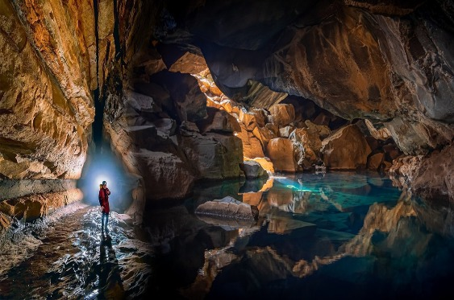
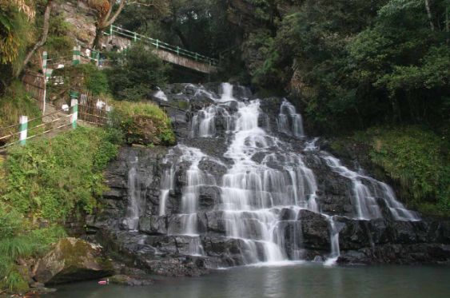
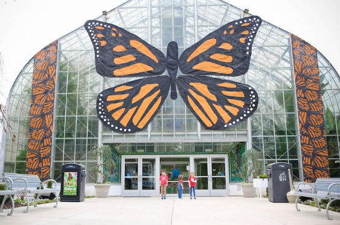

Mawsmai Caves

The Mawsmai Caves, located near Cherrapunji in Meghalaya, are a popular tourist attraction known for their limestone formations and underground passages. Visitors can explore the caves' unique geological features, including stalactites and stalagmites, while learning about their formation and history.
months:The caves are accessible throughout the year, but the best time to visit is during the dry season from October to May when the weather is more favorable for exploring the caves and the surrounding area.The cave is a part of the East Khasi Hills district and is situated in the Mawsmai village, hence the name "Mawsmai Cave." It is easily accessible and attracts a large number of tourists who come to explore its mysterious passages and marvel at its stunning formations.
Mawsmai Cave is characterized by its narrow passages, towering chambers, and intricate limestone formations such as stalactites and stalagmites. The cave system extends for approximately 150 meters, although only a portion of it is open to visitors. Inside, visitors can witness the fascinating interplay of light and shadow as sunlight filters through the cracks and crevices, illuminating the cave's features.
The Elephant Falls

The Elephant Falls, located near Shillong in Meghalaya, is a picturesque waterfall named after a rock resembling an elephant near its foot. Visitors can enjoy the stunning cascade of water surrounded by lush greenery and rock formations. The falls are accessible year-round,
months:the best time to visit is during the monsoon season (June to September) when the waterfall is at its most magnificent. However, exercise caution as the trails can be slippery during this time.The name "Elephant Falls" is derived from a local Khasi legend that tells the story of an elephant-shaped rock near the falls, which unfortunately was destroyed in an earthquake. Despite the loss of the distinctive rock formation, the name "Elephant Falls" has endured and continues to be used to refer to the cascades.
The Elephant Falls is actually a series of three falls that cascade down a rocky gorge, each offering a different vantage point and perspective of the stunning natural scenery. The first of the three falls is the tallest and most prominent, with water plunging down in a single majestic drop. The second and third falls are smaller but equally picturesque, surrounded by lush greenery and rocky outcrops.
Butterfly Museum

The Butterfly Museum in Bhimtal, Uttarakhand, showcases a diverse collection of butterfly species native to the region. Visitors can explore exhibits featuring various stages of butterfly life cycles, learn about their habitats, and appreciate the intricate beauty of these winged creatures.
months:The museum is open throughout the year, but the best time to visit is during the summer months (April to June) when butterfly activity is at its peak, offering a fascinating and educational experience for nature enthusiasts.The Butterfly Museum houses an extensive collection of specimens, including preserved butterflies, moths, beetles, and other insects, displayed in glass cases for visitors to observe and learn about. The collection includes specimens from various parts of India as well as from other countries, providing insights into the incredible diversity of insect life on Earth.
Visitors to the Butterfly Museum can explore the exhibits at their own pace, marveling at the vibrant colors, intricate patterns, and unique features of the butterflies and insects on display. Informational displays and signage provide educational insights into the biology, behavior, and ecological significance of the different species represented in the museum's collection.